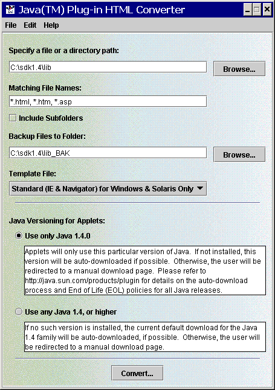

This section includes the following topics:
Notes:
|
The HTML Converter is contained in the SDK, not the JRE. To run the converter,
go to the lib subdirectory of your SDK installation directory.
For example, if you installed the SDK on Window on the C drive,
then cd to
C:\sdk1.4.2\lib\
The converter (htmlconverter.jar) is contained in that directory.
To launch the converter type:
C:\sdk1.4.2\lib>..\bin\java -jar htmlconverter.jar -gui
Launching the converter on UNIX/Linux is analogous.
To launch the converter using Window Explorer, navigate to the following directory:
C:\j2sdk1.4.2\bin
(or to <sdk_location>\bin if it is not located in the directory
shown above) then double-click on the HtmlConverter.exe application.
cd to <sdk_location>/bin—for example /home/jones/j2sdk1.4.2/bin—then
enter:
HtmlConverter -gui
The HTML Converter window will appear:

To convert a single file withing a folder, you
may specify the path to the file and include the file name; you may also browse
to the file a select it. To convert all files within a folder, you may
type in the path to the folder, or choose the browse button to select a folder
from a dialog. Once you have chosen a path, you may supply
any number of file specifiers in "Matching File Names". Each specifier must
be separated by a comma. You may use *
as a wildcard. Finally, if you would like all files in nested
folders matching the file name to be converted, select the checkbox "Include
Subfolders".
The default backup folder path is the source path with
an "_BAK" appended to the name; e.g., if the source path is c:/html,
then the backup path would be c:/html_BAK. The backup path
may be changed by entering a path in the field labeled "Backup Files to Folder:",
or by browsing for a folder.
The default backup folder path is the source path with
an "_BAK" appended to the name; e.g., if the source path is /home/user1/html,
then the backup path would be /home/user1/html_BAK. The backup
path may be changed by typing a path in the field labeled "Backup Files to Folder:",
or by browsing for a folder.
If you would like a log file to be generated, go to the
Advanced Options screen (Edit>Options) and check "Generate Log File". Enter
a path in the text field, including the name of the log file; or use the browse
button to set the path (including log file). The log file may be an existing
one or a new one. The log file contains basic information related to the conversion
process.
A default template will be used if none is chosen. This template will produce converted html files that will work with IE and Netscape. If you would like to use a different template, you may choose it from the menu on the main screen. If you choose "Other Template ..." from the menu, you will be allowed to choose a file to be used as the template. If you choose a file, be sure that it is a template.
Note: The specified version mentioned
below is the version of the JRE you use to launch the converter; e.g., 1.4.2.
The first two numbers in the version indicate the family; e.g., 1.4.3_02
is in the 1.4 family. For an explanation of product version numbers,
see Note on Version Numbers in the section
called Using OBJECT, EMBED
and APPLET Tags in Java Plug-in.
There are two choices here:
|
Click the "Convert..." button to begin the conversion
process. A dialog will show the files being processed, the number of files
processed, the number of applets found, and number of errors.
When the conversion is complete, the button in the process
dialog will change from "Cancel" to "Done". You may choose "Done" to close
the dialog. You can then exit the Java Plug-in HTML Converter program,
or select another set of files to convert.
The template file is the basis behind converting applets.
It is simply a text file containing tags that represent parts of the original
applet. By
adding/removing/moving the tags in a template file, you can alter the output
of the converted file.
Supported Tags:
$OriginalApplet$ |
This tag is substituted with the complete text of the original applet. |
$AppletAttributes$ |
This tag is substituted with all of the applets
attributes ( |
$ObjectAttributes$ |
This tag is substituted
with all the attributes required by the object tag. |
$EmbedAttributes$ |
This tag is substituted
with all the attributes required by the embed tag. |
$AppletParams$ |
This tag is substituted
with all the applet's <param ...> tags |
$ObjectParams$ |
This tag is substituted
with all the <param...> tags required by the object tag.
|
$EmbedParams$ |
This tag is substituted
with all the <param...> tags required by the embed
tag in the form name=value |
$AlternateHTML$ |
This tag is substituted with the text in the no-support-for-applets area of the original applet |
$CabFileLocation$ |
This is the URL of the
cab file that should be used in each template that targets
IE. |
$NSFileLocation$ |
This is the URL of the Netscape plugin to be used in each template that targets Netscape. |
$SmartUpdate$ |
This is the URL of the Netscape SmartUpdate to be used in each template that targets Netscape Navigator 4.0 or later. |
$MimeType$ |
This is the MIME type of the Java object. |
Below are four templates that come with the HTML Converter. You can make up
others and put them in the template folder to use them.
default.tpl—
the default template for the converter. The converted page can be used in IE
and Navigator on Windows to invoke Java Plug-in. This template can also be used
with Netscape on Unix (Solaris)
<!-- HTML CONVERTER -->
<OBJECT classid="clsid:E19F9330-3110-11d4-991C-005004D3B3DB"
$ObjectAttributes$ codebase="$CabFileLocation$">
$ObjectParams$
<PARAM NAME="type" VALUE="$MimeType$">
<PARAM NAME="scriptable" VALUE="false">
$AppletParams$
<COMMENT>
<EMBED type="$MimeType$" $EmbedAttributes$
$EmbedParams$ scriptable=false pluginspage="$NSFileLocation$"><NOEMBED>
</COMMENT>
$AlternateHTML$
</NOEMBED></EMBED>
</OBJECT>
<!--
$ORIGINALAPPLET$
-->
ieonly.tpl
— the converted page can be used to invoke Java Plug-in in IE on Windows
only.
<!-- HTML CONVERTER -->
<OBJECT classid="clsid:E19F9330-3110-11d4-991C-005004D3B3DB"
$ObjectAttributes$ codebase="$CabFileLocation$">
$ObjectParams$
<PARAM NAME="type" VALUE="$MimeType$">
<PARAM NAME="scriptable" VALUE="false">
$AppletParams$
$AlternateHTML$
</OBJECT>
<!--
$ORIGINALAPPLET$
-->
nsonly.tpl
— the converted page can be used to invoke Java Plug-in in Navigator on
Windows and Solaris.
<!-- HTML CONVERTER -->
<EMBED type="$MimeType$" $EmbedAttributes$
$EmbedParams$ scriptable=false pluginspage="$NSFileLocation$"><NOEMBED>
$AlternateHTML$
</NOEMBED></EMBED>
<!--
$ORIGINALAPPLET$
-->
extend.tpl
— the converted page can be used in any browser and any platform. If the
browser is IE or Navigator on Windows, or Navigator on Solaris, Java(TM) Plug-in
will be invoked. Otherwise, the browser's default JVM is used.
<!-- HTML CONVERTER -->
<SCRIPT LANGUAGE="JavaScript"><!--
var _info = navigator.userAgent; var _ns = false; var _ns6 = false;
var _ie = (_info.indexOf("MSIE") > 0 && _info.indexOf("Win") > 0 &&
_info.indexOf("Windows 3.1") < 0);
//--></SCRIPT>
<COMMENT><SCRIPT LANGUAGE="JavaScript1.1"><!--
var _ns = (navigator.appName.indexOf("Netscape") >= 0 &&
((_info.indexOf("Win") > 0 && _info.indexOf("Win16") < 0 &&
java.lang.System.getProperty("os.version").indexOf("3.5") < 0) ||
_info.indexOf("Sun") > 0));
var _ns6 = ((_ns == true) && (_info.indexOf("Mozilla/5") >= 0));
//--></SCRIPT></COMMENT>
<SCRIPT LANGUAGE="JavaScript"><!--
if (_ie == true) document.writeln('<OBJECT
classid="clsid:E19F9330-3110-11d4-991C-005004D3B3DB" $ObjectAttributes$
codebase="$CabFileLocation$"><NOEMBED><XMP>');
else if (_ns == true && _ns6 == false) document.writeln('<EMBED
type="$MimeType$" $EmbedAttributes$
$EmbedParams$ scriptable=false
pluginspage="$NSFileLocation$"><NOEMBED><XMP>');
//--></SCRIPT>
<APPLET $AppletAttributes$></XMP>
$ObjectParams$
<PARAM NAME="type" VALUE="$MimeType$">
<PARAM NAME="scriptable" VALUE="false">
$AppletParams$
$AlternateHTML$
</APPLET>
</NOEMBED></EMBED></OBJECT>
<!--
$ORIGINALAPPLET$
-->
java -jar htmlconverter.jar [-options1 value1 [-option2
value2 [...]]] [-simulate]
[filespecs]
If only "java -jar htmlconverter.jar -gui"
is specified (only -gui option with no filespecs),
the GUI version of the converter will be launched. Otherwise, the GUI
will be suppressed.
filespecs:
space-delimited list of file specifications which may include wildcard (*),
e.g. *.html, file*.html).
-simulate:
Set to preview a conversion without actually doing the conversion.
Use this option if you are unsure about a conversion. You will be shown
detail information about the conversion had it been done.
| Options: | Description |
-source |
Path to files; e.g., c:\htmldocs
in Windows, /home/user1/htmldocs in Unix. Default is <userdir>If the path is relative, it is assumed to be relative to the directory from which the HTMLConverter was launched. |
-dest |
Path to converter file location. Default: <usrdir> |
-backup |
Path to the directory
where you want backup files to be stored. Default: <source>_BAKIf the path is relative, it is assumed to be relative to the directory from which the HTMLConverter was launched. |
-f |
Force overwritting of backup files. |
-subdirs |
Sets whether files in
subdirectories should be converted or not. Default: false
|
-template |
Name of template file to use for conversion.
Default: Note: Use the default if you are unsure. |
-log |
Path and filename for the log. If not provided, no log file is written. |
-progress |
Set to display standard
out progress during conversion. Default: true |
-latest |
Use the latest JRE supporting the MIME type. |
-gui |
Display the graphical user interface for the converter. |